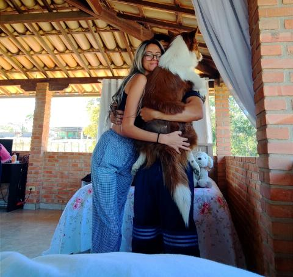
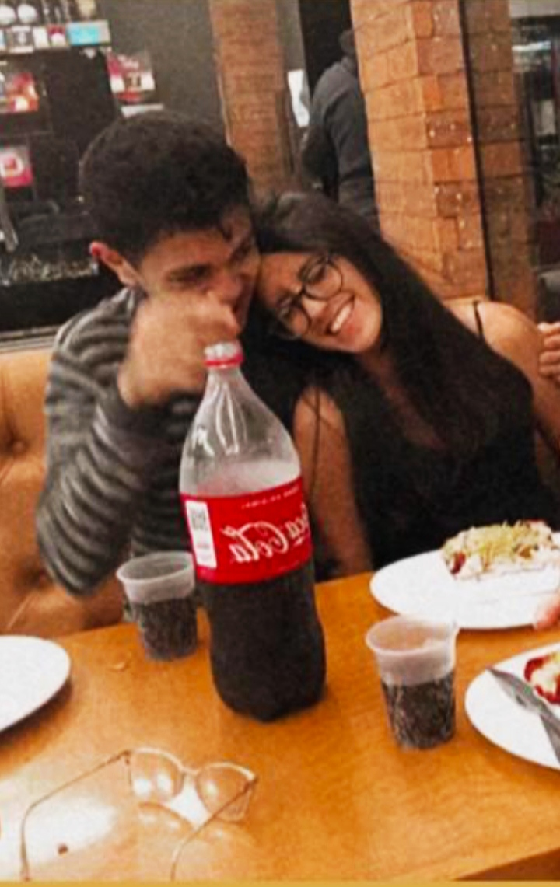
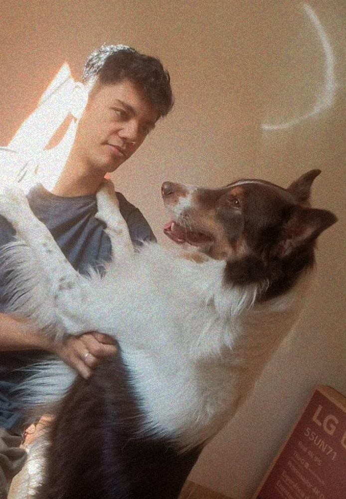
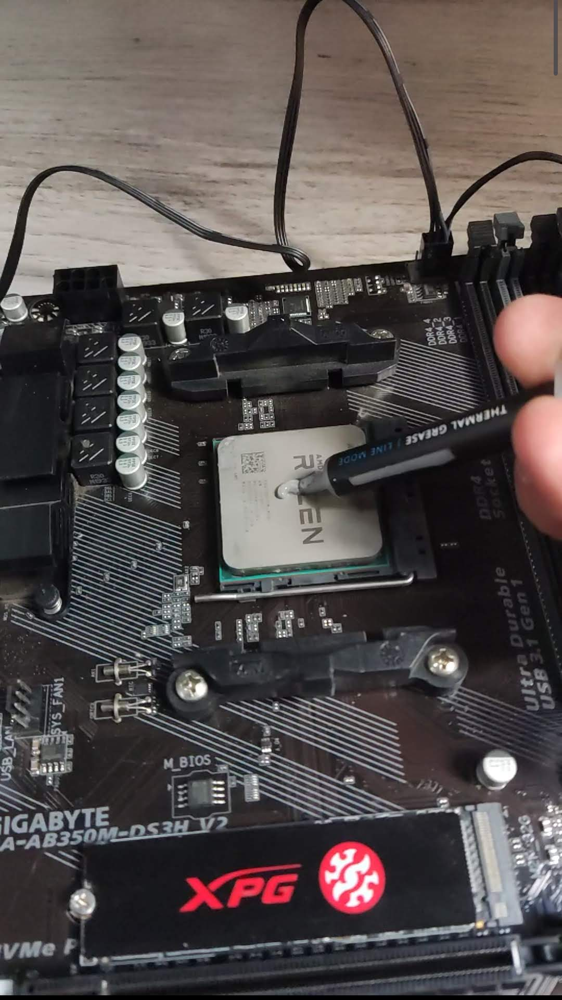
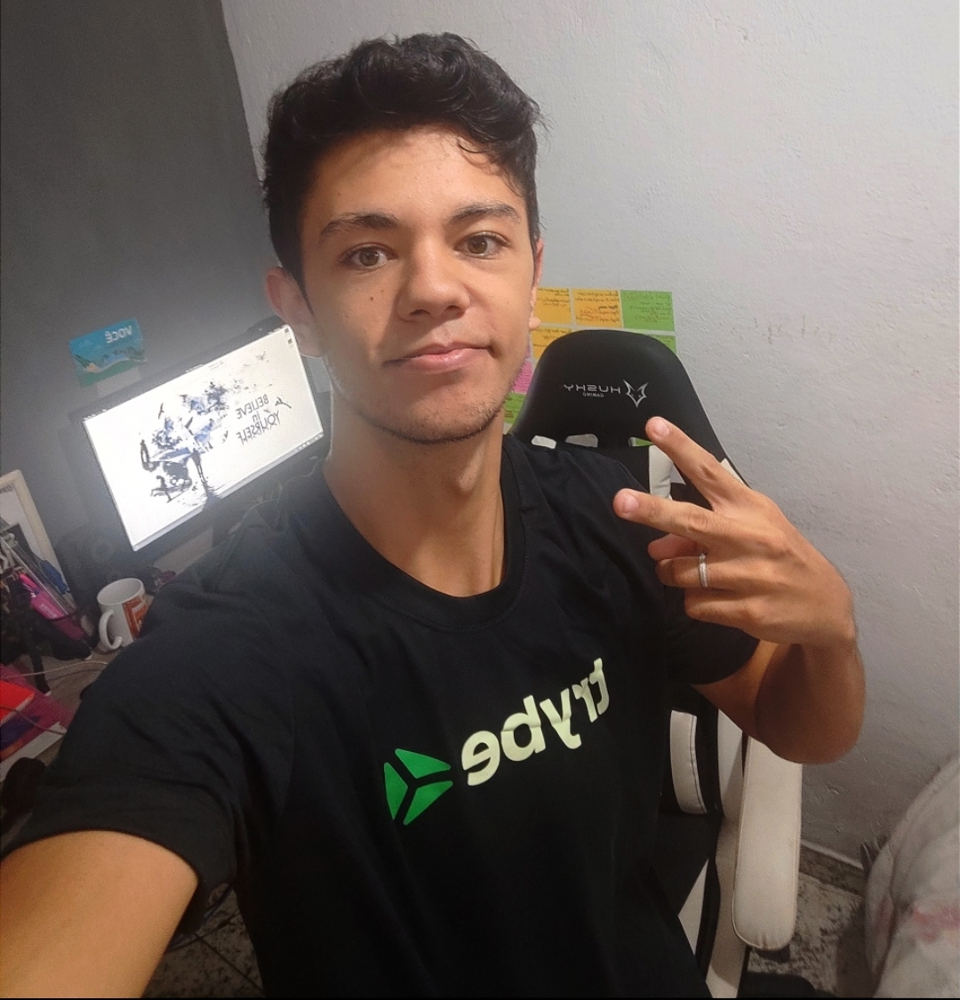
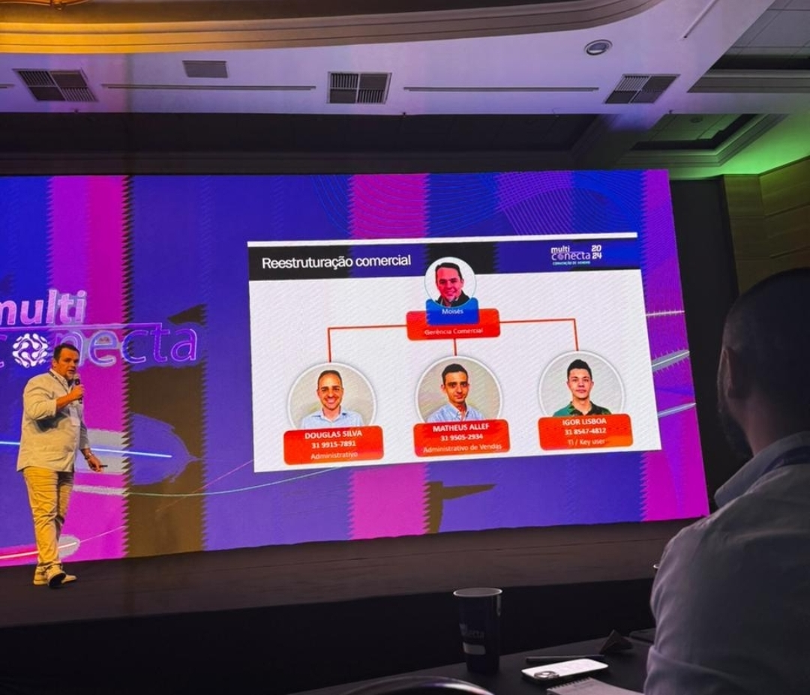

Sobre Mim
Olá! Meu nome é Igor Lisboa, e sou um Desenvolvedor Full Stack apaixonado por tecnologia e desenvolvimento. Tenho um forte interesse em JavaScript e montagem de computadores, sou habilidoso em criar soluções inovadoras e eficientes. Formado pela Trybe, adquiri experiência em diversas tecnologias como Git, JavaScript, TypeScript, React, Node.js, SQL, entre outras. Estou constantemente buscando aprimorar meu conhecimento e enfrentar novos desafios na área.
 Sou noivo e apaixonado por border collies. No meu tempo livre, adoro passar momentos ao ar livre com meu cachorro, Marlon e com minha noiva Silvania. Esses momentos de lazer me ajudam a manter um equilíbrio saudável entre trabalho e vida pessoal, além de me inspirarem a trazer criatividade e energia para meus projetos.
 Minha noiva é uma parte fundamental da minha vida. Ela me ajuda a recarregar as energias e a persistir em meus objetivos, sempre me oferecendo apoio e encorajamento. Juntos, gostamos de descobrir novos lugares, cozinhar e simplesmente aproveitar a companhia um do outro. Seu apoio constante me dá a motivação necessária para enfrentar qualquer desafio.
 Meu cachorro, Marlon, é uma fonte constante de alegria e risadas. Ele tem um jeito especial de transformar qualquer momento, por mais simples que seja, em algo divertido. Seja com suas travessuras inesperadas ou com seu jeito carinhoso, Marlon sempre consegue me fazer sorrir e aliviar o estresse do dia a dia. Ter um ambiente mais leve graças a ele me permite voltar ao trabalho com uma mente renovada e cheia de ideias.
 O hobby que me traz grande satisfação é a montagem, limpeza e manutenção preventiva de computadores. Adoro desmontar e remontar sistemas, garantindo que cada componente esteja funcionando perfeitamente. Esse processo não só me relaxa, mas também me proporciona um sentimento de realização ao ver um computador operando de maneira otimizada. A atenção aos detalhes e a paciência exigidas por esse hobby refletem diretamente em minha abordagem meticulosa aos projetos de desenvolvimento que realizo como por exemplo o Jogo da Forca 2.0.
 Foi na Trybe onde adquirir a maior parte de conhecimento, que foi pavimentando cada conquista de certificado com grandes descobertas e superações. Desde o certificado de Fundamentos, passando por Front-end, Back-end, Computer Science, Android, até o certificado de conclusão final de Full Stack Web Developer, cada etapa foi um marco importante na minha jornada de aprendizado e crescimento profissional. Obrigado Trybe.
 Atualmente, atuo como Assistente Administrativo / TI no Grupo Multitécnica, um gigante do agronegócio. Nesta empresa estou migrando para a área de TI, onde sou Key user Protheus e responsável por demandas de infraestrutura e rede, também atuo como desenvolvedor Fluig na integração de processos que antes utilizavam várias ferramentas como CRM (Zoho), GLPI e QUALYTEAM, ao sistema Fluig da Totvs, interagindo com o Protheus, um ERP também da Totvs. Esta oportunidade de transição de carreira tem sido fundamental para aplicar e expandir meus conhecimentos na prática.
Se você está procurando um desenvolvedor dedicado e apaixonado por tecnologia, adoraria conversar!